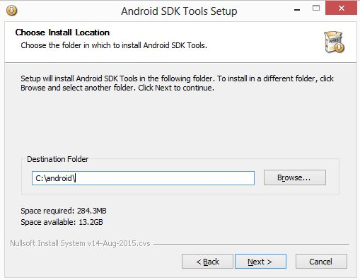
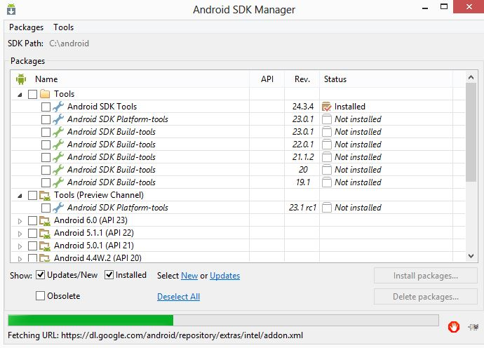

Eu poderia começar esta série de posts mostrando gráficos de como o acesso de aplicativos está em alta e cada vez mais as soluções estão sendo disponibilizadas nos devices.
Mas o objetivo dessa seria de posts é ensinar, de forma prática, desenvolver aplicativos utilizando tecnologias simples.
Desenvolver aplicativos móveis não é muito complexo como alguns imaginam, você precisa primeiro ter uma ideia bacana!
Após definido a ideia você deve analisar vários fatores tais como:
- Quem é seu publico alvo;
- Para quais plataformas, e sistemas operacionais, você irá disponibilizar seu aplicativo;
- E qual o conhecimento que você e/ou seu time tem sobre desenvolvimento de sistemas.
O publico alvo ajuda a definir que linha de design você ira usar, por exemplo se seu publico alvo for crianças de até 8 anos, com certeza seu layout será mais lúdico e explicativo do que se fosse para jovens de 16 a 28 anos.
Definir quais plataformas e sistemas operacionais é o ponto crucial pela definição de usar, ou não, um framework como Ionic. Se você for desenvolver um aplicativo apenas para dispositivos móveis e apenas um sistema operacional, como Android, talvez a escolha do Ionic não seja a melhor opção, mas você deve analisar ainda o próximo item para ter certeza se ira desenvolver seu aplicativo nativo ou não!
Outro ponto de análise é o seu, e de seu time se existir, conhecimento sobre programação.
Existem duas formas de desenvolver aplicativos, uma é utilizando o próprio SDK e IDE do sistema operacional como Android Studio para Android, ou Xcode para iOS, entre outros, ou utilizar um framework que executa em um webview seu app desenvolvido em HTML5/CSS/JS!
Estes pontos tem que serem bem analisados para, de fato, tomar uma decisão. Depois de eu ter desenvolvido vários aplicativos, tanto nativo quanto com frameworks, percebi que o ganho e performance é pequeno perante os benefícios que utilizar um framework webview proporciona!
Então qual a melhor tecnologia para desenvolver aplicativos móveis?
Para mim a melhor tecnologia é aquela que você domina!
E por que utilizar o Ionic?
Porque é simples, rápido e fácil criar aplicativos com ele e tem suporte a AngularJS que deixa muito mais simples a manipulação dos dados.
Então vamos lá! O primeiro passo é preparar o ambiente de desenvolvimento.
Instalando ambiente para desenvolver com Ionic
Para começar a desenvolver com Ionic precisamos preparar e instalar o ambiente de desenvolvimento, para isso vamos precisar de:
- Instalar Node.js
- Instalar Cordova
- Instalar Ionic
- Instalar o SDK da plataforma que deseja criar o aplicativo
Em outro post irei detalhar mais o que são cada uma dessas dependências, neste momento o importante é deixar o ambiente instalado.
Precisamos do NodeJS para usar o NPM, que é um gerenciador de pacotes para NodeJS, com ele ficará mais simples realizar a instalação das dependências do Ionic.
Acesse https://nodejs.org e baixe a última versão do NodeJS.
O Ionic, como o NPM, são aplicações command-line, ou seja, são executados em linha de comando em um terminal.
Após instalar o NodeJS vamos instalar as outras dependências do Ionic. Abra um terminal, no caso do Windows vai em iniciar > executar > digite CMD, ou use o atalho: Window + R
No terminal digite npm, se aparecer algo como isso é porque o NodeJS foi instalado com sucesso.
Terminal
~ $ npm
Usage: npmwhere is one of: access, add-user, adduser, apihelp, author, bin, bugs, c, cache, completion, config, ddp, dedupe, deprecate, dist-tag, dist-tags, docs, edit, explore, faq, find, find-dupes, get, help, help-search, home, i, info, init, install, issues, la, link, list, ll, ln, login, logout, ls, outdated, owner, pack, ping, prefix, prune, publish, r, rb, rebuild, remove, repo, restart, rm, root, run-script, s, se, search, set, show, shrinkwrap, star, stars, start, stop, t, tag, team, test, tst, un, uninstall, unlink, unpublish, unstar, up, update, upgrade, v, verison, version, view, whoami npm -h quick help on npm -l display full usage info npm faq commonly asked questions npm help search for help on npm help npm involved overview Specify configs in the ini-formatted file: C:\Users\fabio\.npmrc or on the command line via: npm --key value Config info can be viewed via: npm help config npm@2.14.4 C:\nodejs\node_modules\npm
Agora vamos instalar o Cordova e o Ionic. Digite: npm install -g cordova ionic
Terminal
~ $ npm install -g cordova ionic
├── cli-table@0.3.1 (colors@1.0.3) ├── form-data@0.1.4 (mime@1.2.11, combined-stream@0.0.7) ├── serve-static@1.7.1 (utils-merge@1.0.0, escape-html@1.0.1, parseurl@1.3.0, send@0.10.1) ├── opbeat-ionic@1.1.3 (console-log-level@1.1.0, json-stringify-safe@5.0.1, stac kman@0.2.3, after-all@2.0.2) ├── tiny-lr-fork@0.0.5 (debug@0.7.4, qs@0.5.6, faye-websocket@0.4.4, noptify@0.0.3) ├── request@2.51.0 (aws-sign2@0.5.0, forever-agent@0.5.2, caseless@0.8.0, tunnel-agent@0.4.1, oauth-sign@0.5.0, stringstream@0.0.4, json-stringify-safe@5.0.1, mime-types@1.0.2, qs@2.3.3, node-uuid@1.4.3, tough-cookie@2.0.0, combined-stream@0.0.7, bl@0.9.4, form-data@0.2.0, http-signature@0.10.1, hawk@1.1.1) ├── vinyl-fs@0.3.7 (graceful-fs@3.0.8, lodash@2.4.2, strip-bom@1.0.0, vinyl@0.4.6, mkdirp@0.5.1, through2@0.6.5, glob-stream@3.1.18, glob-watcher@0.0.6) ├── prompt@0.2.12 (revalidator@0.1.8, pkginfo@0.3.0, read@1.0.6, winston@0.6.2,utile@0.2.1) ├── unzip@0.1.9 (setimmediate@1.0.2, readable-stream@1.0.33, pullstream@0.4.1, match-stream@0.0.2, binary@0.3.0, fstream@0.1.31) ├── gulp@3.8.8 (interpret@0.3.10, pretty-hrtime@0.2.2, deprecated@0.0.1, archy@0.0.2, minimist@1.1.2, semver@3.0.1, tildify@1.1.0, chalk@0.5.1, orchestrator@0.3.7, gulp-util@3.0.6, liftoff@0.12.1) ├── cheerio@0.19.0 (entities@1.1.1, dom-serializer@0.1.0, css-select@1.0.0, htmlparser2@3.8.3, lodash@3.10.0) ├── xml2js@0.4.4 (sax@0.6.1, xmlbuilder@2.6.4) ├── npm@2.1.3 └── ionic-app-lib@0.3.8 (vinyl-fs@1.0.0, archiver@0.5.2, ionic-cordova-lib@5.1.7)
Se tudo ocorrer bem e nada der errado :) você verá algo semelhante ao apresentado acima
Isso indica que o Ionic, e suas dependências, foram instalados, se algum erro for apresentado na linha de comando, verifique nos comentários deste post se já não foi ocorrido com outro leitor e se já não foi dado a solução. Caso der erro e não estiver no comentário, favor inserir como comentário para que possamos solucionar e já deixar de ajuda para outros!
Para testar digite: ionic --version
Terminal
~ $ ionic --version
1.6.4
Uma etapa está pronta, então vamos criar nosso primeiro aplicativo. No terminal digite: ionic start primeiroApp blank
Terminal
~ $ ionic start primeiroApp blank
Creating Ionic app in folder C:\Users\fabio\primeiroApp based on blank project Downloading: https://github.com/driftyco/ionic-app-base/archive/master.zip [=============================] 100% 0.0s Downloading: https://github.com/driftyco/ionic-starter-blank/archive/master.zip [=============================] 100% 0.0s Updated the hooks directory to have execute permissions Update Config.xml Initializing cordova project Your Ionic project is ready to go! Some quick tips: * cd into your project: $ cd primeiroApp * Setup this project to use Sass: ionic setup sass * Develop in the browser with live reload: ionic serve * Add a platform (ios or Android): ionic platform add ios [android] Note: iOS development requires OS X currently See the Android Platform Guide for full Android installation instructions: https://cordova.apache.org/docs/en/edge/guide_platforms_android_index.md.html * Build your app: ionic build* Simulate your app: ionic emulate * Run your app on a device: ionic run * Package an app using Ionic package service: ionic package For more help use ionic --help or ionic docs Visit the Ionic docs: http://ionicframework.com/docs Create an ionic.io account to send Push Notifications and use the Ionic View app? (Y/n):
Na primeira vez que você cria um app o Ionic ira perguntar se você deseja criar uma conta para usar alguns dos serviços online dele. Nesta etapa responda não, digitando n e precionando ENTER:
Terminal
~ $ (Y/n): n
+---------------------------------------------------------+ + New Ionic Updates for September 2015 + + The View App just landed. Preview your apps on any device + http://view.ionic.io + + Invite anyone to preview and test your app + ionic share EMAIL + + Generate splash screens and icons with ionic resource + http://ionicframework.com/blog/automating-icons-and-splash-screens/ + +---------------------------------------------------------+
Pronto! App criado :)
Este comando cria uma nova estrutura para um aplicativo que vamos chamar de primeiroApp sem nenhum template.
Para testar seu aplicativo entre na pasta do projeto criado, digite cd primeiroApp, e digite: ionic serve para seu app ser exibido no navegador.
Terminal
~ $ cd primeiroApp
~ $ ionic serve
Multiple addresses available. Please select which address to use by entering its number from the list below: 1) 10.0.2.15 (Ethernet) 2) localhost Address Selection:
Na primeira vez que você executa este comando o Ionic pergunta em qual IP você deseja disponibilizar seu App para ser exibido no browser, se você for acessar apenas local esolha a opção localhost:
Terminal
~ $ Address Selection: 2
Selected address: localhost Running live reload server: http://localhost:35729 Watching : [ 'www/**/*', '!www/lib/**/*' ] Running dev server: http://localhost:8100 Ionic server commands, enter: restart or r to restart the client app from the root goto or g and a url to have the app navigate to the given url consolelogs or c to enable/disable console log output serverlogs or s to enable/disable server log output quit or q to shutdown the server and exit ionic $
Seu navegador deve abrir altomaticamete com o app criado até o momento:
Este é o app criado com um template simples contendo apenas um cabeçalho e o corpo em branco, vamos analisar a estrutura das pastas criadas:
Os Arquivos, package.json, ionic.project, guilpfile.js, bower.json, .gitignore, .editorconfig, .bowerrc são arquivos de configuração que o Ionic gera e controla automaticamente.
O config.xml é o arquivo de configuração do seu app, aqui você pode trocar o nome, descrição e autor.
O nome é apresentado na instalação do app no device e no nome do ícone de lauch:

Veremos mais a diante como trocar o ícone e outros detalhes!
A pasta www contem todos nossos arquivos HTML/CSS/JS onde iremos desenvolver nosso aplicativo.
As demais pastas falaremos mais adiantes quando necessário.
Vamos modificar nosso primeiro aplicativo, dentro da pasta www edite o arquivo index.html adicionando o bloco de HTML abaixo onde esta marcado de vermelho, como está no print:
Quando você edita algum arquivo dentro da pasta www o aplicativo aberto no navegador é recarregado automaticamente.
Seu app deverá esta algo parecido com isso:

Agora vamos instalar a última etapa que é habilitar o ionic para gerar o aplicativo para Android.
Primeiro vamos baixar o SDK, acesse o link: https://developer.android.com/sdk/index.html#Other e baixe o instalador recomendado:
Ao executar o instalador se você não tiver o Java SE instalado o instalador ira acusar que é necessário primeiro instalar o Java para depois continuar com a instalação, neste caso uma tela parecida com essa será exibida:
Clique em Visit java.oracle.com e clique em Download JDK:
Em seguida aceite os termos da Oracle e baixe a versão para seu sistema operacional:
Faça a instalação do Java e execute novamente o instalador do SDK do Android:
É importante você manter os arquivos do SDK em uma pasta de fácil acesso pois você vai precisar sempre estar entrando nesta pasta para manter os arquivos do Android atualizado.
No meu caso eu optei por deixar em c:\Android:

Ao finalizar deixe marcado a opção [x] Start SDK Manager, o gerenciador do SDK irá ser exibido:

Neste momento o SDK Manager irá verificar se tem novas atualizações para serem realizadas, se tiver ele ira marca-las altomaticamente e o botão estará exibindo a quantidade de pacotes a serem instalados:
Marque também Android 5.1.1 (API 22):
Clique em "Accept Licence" e em seguida "Install"
Agora vá tomar uma água ou um café, pois este processo geralmente é demorado!
Para usuários Windows: Concluído o processo de atualização do SDK vamos criar uma variável de ambiente chamada ANDROID_HOME e atualizar a variável PATH, para isso pressione as teclas Windows + Pause e vá em Configurações avançadas do sistema e em seguida clique em Variáveis de Ambiente:


Para não precisar reiniciar a maquina vamos criar esta variável em "variáveis de usuário", clique em "Novo" e inclua uma variável chamada ANDROID_HOME apontando para o caminho onde você instalou o SDK:
Em seguida edite a variável PATH adicionando no final: o caminho da pasta platform-tools:
Adicionando plataforma Android
Agora vamos adicionar a plataforma Android para que o Ionic possa gerar o nosso app para este S.O, no terminal digite: ionic platform android
Terminal
~ $ ionic platform android
Updated the hooks directory to have execute permissions
Adding android project...
Creating Cordova project for the Android platform:
Path: platforms\android
Package: com.ionicframework.primeiroapp875548
Name: primeiroApp
Activity: MainActivity
Android target: android-22
Copying template files...
Android project created with cordova-android@4.1.1
Running command: C:\nodejs\node.exe C:\workspace\ioniclab\primeiroApp\hooks\after_prepare\010_add_platform_class.js C:\workspace\ioniclab\primeiroApp
add to body class: platform-android
Installing "com.ionic.keyboard" for android
Installing "cordova-plugin-console" for android
Installing "cordova-plugin-device" for android
Installing "cordova-plugin-splashscreen" for android
Installing "cordova-plugin-whitelist" for android
Agora vamos gerar o app. Digite: ionic build android
Terminal
~ $ ionic build android
Running command: C:\nodejs\node.exe C:\workspace\ioniclab\primeiroApp\hooks\after_prepare\010_add_platform_class.js C:\workspace\ioniclab\primeiroApp
add to body class: platform-android
Running command: cmd "/s /c "C:\workspace\ioniclab\primeiroApp\platforms\android\cordova\build.bat""
ANDROID_HOME=C:\android
JAVA_HOME=C:\Program Files\java\jdk1.8.0_60
Running: C:\workspace\ioniclab\primeiroApp\platforms\android\gradlew cdvBuildDebug -b C:\workspace\ioniclab\primeiroApp\platforms\android\build.gradle -Dorg.gradle.daemon=true
Downloading http://services.gradle.org/distributions/gradle-2.2.1-all.zip
................................................................................
................................................................................
................................................................................
................................................................................
................................................................................
:preDexDebug
:dexDebug
:processDebugJavaRes UP-TO-DATE
:validateDebugSigning
:packageDebug
:zipalignDebug
:assembleDebug
:cdvBuildDebug
BUILD SUCCESSFUL
Total time: 4 mins 36.199 secs
Built the following apk(s):
C:\workspace\ioniclab\primeiroApp\platforms\android\build\outputs\apk\android-debug.apk
Se alguma mensgem de erro for apresentada, relate nos comentários.
Nesse momento o Ionic gerou o apk, que é o instalador do app no Android, para este primeiro post não vamos usar emulador, pois vou escrever um só sobre emuladores, devices, etc!
Para testar pegue o app gerado na pasta indicada na última linha do log gerado:
C:\workspace\ioniclab\primeiroApp\platforms\android\build\outputs\apk\android-debug.apk
Copie este arquivo para seu smartphone e mande instalar, caso seja seu primeiro apk sendo instalado, o Android irá solicitar que você habilite "Fontes desconhecidas". Se tudo der certo você verá o app:
Show :)
É isso ai pessoal, espero que este posto ajude vocês a iniciar com Ionic! Daqui pra frente é só alegria.
Sugestões, reclamações e elogios deixe nos comentários!